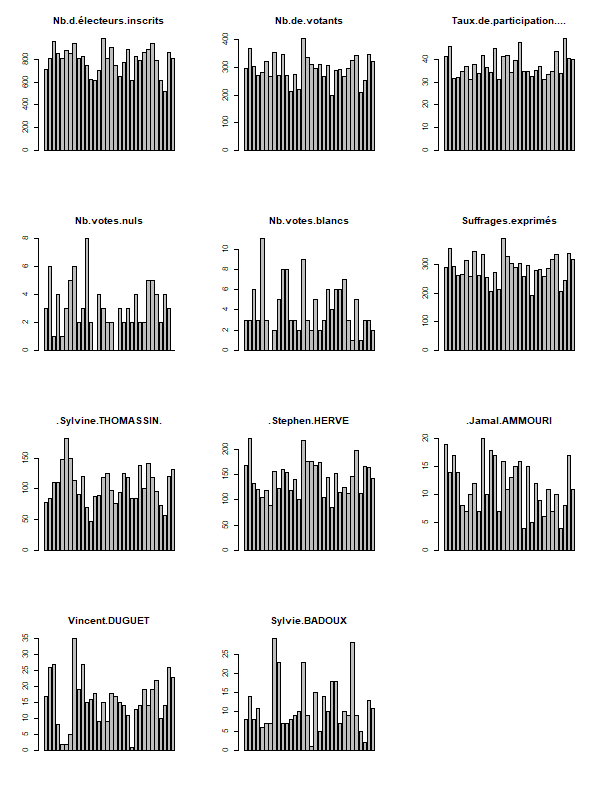
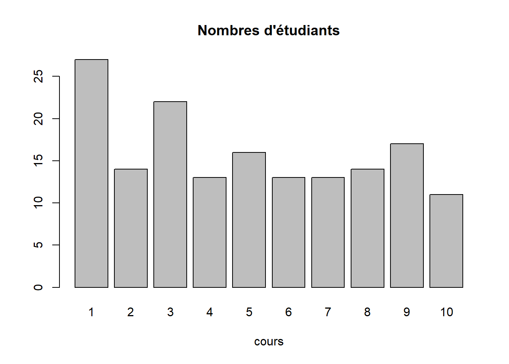

nom <- c("Zachary", "Pierre", "Linda")
notes <- c(16,12,13)3 trucs pour survivre :
Alt + - pour l’opérateur d’assignation
tabulation pour la complétion
Ctrl + entrée pour executer la ligne de code
nom [1]## [1] "Zachary"notes [2]## [1] 12df <- data.frame(nom, notes)
df [1,2]## [1] 16df$nom## [1] "Zachary" "Pierre" "Linda"df$notes## [1] 16 12 13#sum(df$notes)
sum(notes)## [1] 41Créer un dataframe sur 3 villes et leur nombre d’habitants Trouver la moyenne du nombre d’habitants.
Avec l’exemple, du fichier des élections, on introduit la notion de boucle.
Avec celui du fichier des présences, on explore les listes et les fonctions apply.
On cherche à faire un graphique de chacun des résultats
data <- read.csv("data/bondyElection.csv", fileEncoding = "UTF-8", dec = ",")
head(data)## Bureau.de.vote Nb.d.électeurs.inscrits Nb.de.votants
## 1 BV1 715 296
## 2 BV2 808 368
## 3 BV3 961 302
## 4 BV4 848 270
## 5 BV5 812 280
## 6 BV6 876 321
## Taux.de.participation.... Nb.votes.nuls Nb.votes.blancs Suffrages.exprimés
## 1 41.39860 3 3 290
## 2 45.54455 6 3 359
## 3 31.42560 1 6 295
## 4 31.83962 4 3 263
## 5 34.48276 1 11 268
## 6 36.64384 3 3 315
## Résultats.liste.1...Liste.de.la.gauche.unie.pour.Bondy....Sylvine.THOMASSIN.
## 1 78
## 2 84
## 3 111
## 4 110
## 5 148
## 6 181
## Résultats.liste.2....Pour.Bondy.allons.plus.loin....Stephen.HERVE
## 1 168
## 2 221
## 3 132
## 4 120
## 5 104
## 6 118
## Résultats.liste.3....Bondy.pour.une.gauche.sociale.insoumise.et.populaire....Jamal.AMMOURI
## 1 19
## 2 14
## 3 17
## 4 14
## 5 8
## 6 7
## Résultats.liste.4....Bondy.autrement...Vincent.DUGUET
## 1 17
## 2 26
## 3 27
## 4 8
## 5 2
## 6 2
## Résultats.liste.5....Bondy.c.est.vous...Sylvie.BADOUX
## 1 8
## 2 14
## 3 8
## 4 11
## 5 6
## 6 7summary(data)## Bureau.de.vote Nb.d.électeurs.inscrits Nb.de.votants
## Length:34 Min. : 517 Min. : 200.0
## Class :character 1st Qu.: 749 1st Qu.: 270.0
## Mode :character Median : 808 Median : 296.0
## Mean : 1539 Mean : 571.5
## 3rd Qu.: 876 3rd Qu.: 326.0
## Max. :25391 Max. :9429.0
## NA's :1 NA's :1
## Taux.de.participation.... Nb.votes.nuls Nb.votes.blancs
## Min. :31.26 Min. : 0.000 Min. : 0.000
## 1st Qu.:33.89 1st Qu.: 2.000 1st Qu.: 2.250
## Median :35.73 Median : 3.000 Median : 3.000
## Mean :37.37 Mean : 5.677 Mean : 7.747
## 3rd Qu.:41.19 3rd Qu.: 4.000 3rd Qu.: 6.000
## Max. :48.94 Max. :96.000 Max. :131.000
## NA's :2
## Suffrages.exprimés
## Min. : 194.0
## 1st Qu.: 261.0
## Median : 290.0
## Mean : 557.7
## 3rd Qu.: 320.0
## Max. :9202.0
## NA's :1
## Résultats.liste.1...Liste.de.la.gauche.unie.pour.Bondy....Sylvine.THOMASSIN.
## Min. : 36.73
## 1st Qu.: 84.25
## Median : 105.50
## Mean : 199.90
## 3rd Qu.: 123.75
## Max. :3380.00
##
## Résultats.liste.2....Pour.Bondy.allons.plus.loin....Stephen.HERVE
## Min. : 49.89
## 1st Qu.: 115.75
## Median : 143.50
## Mean : 271.53
## 3rd Qu.: 167.50
## Max. :4591.00
##
## Résultats.liste.3....Bondy.pour.une.gauche.sociale.insoumise.et.populaire....Jamal.AMMOURI
## Min. : 4.00
## 1st Qu.: 7.25
## Median : 11.00
## Mean : 21.88
## 3rd Qu.: 15.75
## Max. :370.00
##
## Résultats.liste.4....Bondy.autrement...Vincent.DUGUET
## Min. : 1.00
## 1st Qu.: 10.25
## Median : 15.00
## Mean : 29.57
## 3rd Qu.: 19.00
## Max. :500.00
##
## Résultats.liste.5....Bondy.c.est.vous...Sylvie.BADOUX
## Min. : 1.00
## 1st Qu.: 7.00
## Median : 9.00
## Mean : 21.35
## 3rd Qu.: 14.00
## Max. :361.00
## data$Bureau.de.vote## [1] "BV1" "BV2" "BV3" "BV4" "BV5"
## [6] "BV6" "BV7" "BV8" "BV9" "BV10"
## [11] "BV11" "BV12" "BV13" "BV14" "BV15"
## [16] "BV16" "BV17" "BV18" "BV19" "BV20"
## [21] "BV21" "BV22" "BV23" "BV24" "BV25"
## [26] "BV26" "BV27" "BV28" "BV29" "BV30"
## [31] "BV31" "BV32" "TOTAL" "Total en %"data <- data [-c(33,34),]candidat <- names(data)[8:12]
candidat## [1] "Résultats.liste.1...Liste.de.la.gauche.unie.pour.Bondy....Sylvine.THOMASSIN."
## [2] "Résultats.liste.2....Pour.Bondy.allons.plus.loin....Stephen.HERVE"
## [3] "Résultats.liste.3....Bondy.pour.une.gauche.sociale.insoumise.et.populaire....Jamal.AMMOURI"
## [4] "Résultats.liste.4....Bondy.autrement...Vincent.DUGUET"
## [5] "Résultats.liste.5....Bondy.c.est.vous...Sylvie.BADOUX"liste <- strsplit(candidat,"\\.\\.\\.")
liste [[5]][3]## [1] "Sylvie.BADOUX"candidat <- sapply(liste, '[', 3)
names (data) [8:12] <- candidat
names(data)## [1] "Bureau.de.vote" "Nb.d.électeurs.inscrits"
## [3] "Nb.de.votants" "Taux.de.participation...."
## [5] "Nb.votes.nuls" "Nb.votes.blancs"
## [7] "Suffrages.exprimés" ".Sylvine.THOMASSIN."
## [9] ".Stephen.HERVE" ".Jamal.AMMOURI"
## [11] "Vincent.DUGUET" "Sylvie.BADOUX"png(height = 800, width = 600, filename = "img/resultat.png")
par(mfrow = c(4,3))
for (i in 2:12){
barplot(data [,i], main = names(data) [i])
}
dev.off()## png
## 2
Cet exemple montrer les 3 types possibles de code.
code séquentiel
code en boucle classique
code R : liste et apply
source : https://r-coder.com/merge-r/
Il s’agit d’importer les .csv dans R et de les lier par prénom.
# Intégration des tableaux
cours1 <- read.csv("data/cours1.csv", encoding = "UTF-8")
cours2 <- read.csv("data/cours2.csv", encoding = "UTF-8")
cours3 <- read.csv("data/cours3.csv",encoding = "UTF-8")
cours4 <- read.csv("data/cours4.csv", encoding = "UTF-8")
# Examen de la nature des champs
str(cours1)## 'data.frame': 32 obs. of 14 variables:
## $ Prénom : chr "Louis" "Gaëlle" "Anne" "Mariam" ...
## $ nom : chr "x" "x" "x" "x" ...
## $ adresse.mail : chr "X@mail" "X@mail" "X@mail" "X@mail" ...
## $ X44223 : chr "oui" "oui" "oui" "oui" ...
## $ passé : chr "archéologie-géographie" "L2 archéo-géographie" "Classe préparatoire Khâgne/Hypokhâgne Lakanal" "L2 Géographie et aménagement" ...
## $ présent : chr "L3 archéologie géographie" "L3 archéologie géographie" "L3 géographie et aménagement" "L3 géographie et aménagement" ...
## $ futur : chr "égyptologie" "SIG appliqué à l'archéologie" "Urbaniste" "logisticienne" ...
## $ appétence.codage..1.fort.4.mauvais: int 2 1 2 3 1 1 3 3 4 3 ...
## $ Niveau.de.codage.de.0.à.5 : int 0 0 0 1 NA NA 2 NA 1 0 ...
## $ désinscription : chr "" "oui" "" "" ...
## $ X : logi NA NA NA NA NA NA ...
## $ X.1 : logi NA NA NA NA NA NA ...
## $ X.2 : logi NA NA NA NA NA NA ...
## $ X.3 : logi NA NA NA NA NA NA ...str(cours2)## 'data.frame': 34 obs. of 14 variables:
## $ Prénom : chr "Louis" "Gaëlle" "Anne" "Mariam" ...
## $ cours2..oui. : chr "oui" "autre TD" "oui" "oui" ...
## $ lien.internet.du.site.git: chr "https://github.com/Beatdvtbea/Exercice" "" "" "" ...
## $ X : logi NA NA NA NA NA NA ...
## $ X.1 : logi NA NA NA NA NA NA ...
## $ X.2 : logi NA NA NA NA NA NA ...
## $ X.3 : logi NA NA NA NA NA NA ...
## $ X.4 : logi NA NA NA NA NA NA ...
## $ X.5 : logi NA NA NA NA NA NA ...
## $ X.6 : logi NA NA NA NA NA NA ...
## $ X.7 : logi NA NA NA NA NA NA ...
## $ X.8 : logi NA NA NA NA NA NA ...
## $ X.9 : logi NA NA NA NA NA NA ...
## $ X.10 : logi NA NA NA NA NA NA ...str(cours3)## 'data.frame': 30 obs. of 4 variables:
## $ Prénom : chr "Louis" "Anne" "Mariam" "Selin" ...
## $ cours3..oui.: chr "oui" "oui" "oui" "Oui" ...
## $ lien.github : chr "ok" "ok" "ok" "ok" ...
## $ X : chr "" "" "" "" ...str(cours4)## 'data.frame': 19 obs. of 7 variables:
## $ Prénom : chr "Louis" "Anne" "Mariam" "Selin" ...
## $ cours4..oui. : chr "oui" "oui" "oui" "oui" ...
## $ lien.git : chr "https://beatdvtbea.github.io/Exercice/01_intro.html" "https://github.com/annesimon94/momo.git" "https://github.com/MariamOuatt/monrepository" " https://selinhacer.github.io/L6ECSIG/" ...
## $ X : chr "" "" "" "" ...
## $ Article.à.lire..https...pages.github.com.: logi NA NA NA NA NA NA ...
## $ X.1 : logi NA NA NA NA NA NA ...
## $ X.2 : logi NA NA NA NA NA NA ...# rappel : pour supprimer les facteurs, le paramètre est stringsAsFactor = FOn remarque que c’est toujours la 2e colonne qui nous intéresse sauf pour le cours1
coursBase <- cours1 [, c("Prénom", "X44223")]
names (coursBase)[2] <- "cours1..oui."C’est la fonction merge que l’on retrouvera en R-spatial.
# Première fusion
cours1_2 <- merge(coursBase,cours2, all = T)
# l'option all = T permet de récupérer tous les prénoms
# Première vérification : nb de lignes du cours
str(cours1_2)## 'data.frame': 34 obs. of 15 variables:
## $ Prénom : chr "Alaya" "Anna" "Anne" "Aurélie" ...
## $ cours1..oui. : chr "oui" "oui" "oui" "non" ...
## $ cours2..oui. : chr "oui" "oui" "oui" "non" ...
## $ lien.internet.du.site.git: chr "" "https://github.com/AnnaMauclet/SIG1.git" "" "" ...
## $ X : logi NA NA NA NA NA NA ...
## $ X.1 : logi NA NA NA NA NA NA ...
## $ X.2 : logi NA NA NA NA NA NA ...
## $ X.3 : logi NA NA NA NA NA NA ...
## $ X.4 : logi NA NA NA NA NA NA ...
## $ X.5 : logi NA NA NA NA NA NA ...
## $ X.6 : logi NA NA NA NA NA NA ...
## $ X.7 : logi NA NA NA NA NA NA ...
## $ X.8 : logi NA NA NA NA NA NA ...
## $ X.9 : logi NA NA NA NA NA NA ...
## $ X.10 : logi NA NA NA NA NA NA ...cours1_2 [, c(1:3)]## Prénom cours1..oui. cours2..oui.
## 1 Alaya oui oui
## 2 Anna oui oui
## 3 Anne oui oui
## 4 Aurélie non non
## 5 Camille oui autre TD
## 6 Chang-Beom oui oui
## 7 Chloé oui oui
## 8 Eah oui non
## 9 Elif-Delphine oui non
## 10 Elisa oui autre TD
## 11 Emma non non
## 12 Gaëlle oui autre TD
## 13 Galli <NA> oui
## 14 Gianluca oui oui
## 15 Guénolé oui oui
## 16 Ianis oui oui
## 17 Iman oui oui
## 18 Jennifer oui oui
## 19 Laura oui autre TD
## 20 Linda oui
## 21 Louis oui oui
## 22 LUCAS oui oui
## 23 Mariam oui oui
## 24 Marion oui oui
## 25 Matthieu non non
## 26 SALIF oui non
## 27 Sanaa oui oui
## 28 sarah <NA> oui
## 29 Savannah oui oui
## 30 Selin oui Oui
## 31 Théo non non
## 32 Thomas oui oui
## 33 Yanis non oui
## 34 Zachary oui oui# pour la fusion suivante, les titres des colonnes sont nécessaires.
cours1_3 <- merge(cours1_2 [, c(1:3)], cours3 [, c(1,2)], by.x = "Prénom", by.y = "Prénom", all = T)
str(cours1_3)## 'data.frame': 34 obs. of 4 variables:
## $ Prénom : chr "Alaya" "Anna" "Anne" "Aurélie" ...
## $ cours1..oui.: chr "oui" "oui" "oui" "non" ...
## $ cours2..oui.: chr "oui" "oui" "oui" "non" ...
## $ cours3..oui.: chr "oui" "oui" "oui" "non" ...# recodage nom des colonnes dans le tableau final
names(cours1_3) [2:4] <- c("cours1","cours2","cours3")Rajouter le 4e cours
Déposer le .Rmd dans le moodle avant la fin du cours. N’oubliez pas les commentaires !
# On liste les fichiers du répertoire data
contenu <- list.files("data/")
# On remonte les indices des noms contenant "cours"
ind <- grep("cours", contenu)
# verif : il doit y en avoir 5 puisqu'il y a eu 5 cours
# on sort cours1.csv dont la structure est différente
i <- 2
#initialisation tmp et coursBase au cas où boucle tourne pl fois
tmp <- NULL
coursBase <- cours1 [, c("Prénom", "X44223")]
names (coursBase)[2] <- "cours1..oui."
for (i in 2:length(ind)){
tmp <- read.csv(paste0("data/", contenu [ind [i]]), fileEncoding = "UTF-8")
tmp
coursMerge <- merge(coursBase,tmp [,c(1:2)], all = T, by = c("Prénom", "Prénom"))
coursBase <- coursMerge
}
coursMerge## Prénom cours1..oui. cours2..oui. cours3..oui. cours4..oui.
## 1 Alaya oui oui oui oui
## 2 Anna oui oui oui oui
## 3 Anne oui oui oui oui
## 4 Aurélie non non non <NA>
## 5 Camille oui autre TD <NA> <NA>
## 6 Chang-Beom oui oui oui oui
## 7 Chloé oui oui oui oui
## 8 Eah oui non non <NA>
## 9 Elif-Delphine oui non non <NA>
## 10 Elisa oui autre TD <NA> <NA>
## 11 Emma non non non <NA>
## 12 Gaëlle oui autre TD <NA> <NA>
## 13 Galli <NA> oui non oui
## 14 Gianluca oui oui non oui
## 15 Guénolé oui oui non non
## 16 Ianis oui oui oui oui
## 17 Iman oui oui non <NA>
## 18 Jennifer oui oui non oui
## 19 Laura oui autre TD <NA> <NA>
## 20 Linda oui non <NA>
## 21 Louis oui oui oui oui
## 22 LUCAS oui oui non <NA>
## 23 Mariam oui oui oui oui
## 24 Marion oui oui Oui Oui
## 25 Matthieu non non non <NA>
## 26 SALIF oui non non <NA>
## 27 Sanaa oui oui oui oui
## 28 sarah <NA> oui oui oui
## 29 Savannah oui oui non non
## 30 Selin oui Oui Oui oui
## 31 Théo non non non <NA>
## 32 Thomas oui oui non non
## 33 Yanis non oui non <NA>
## 34 Zachary oui oui oui oui
## cours5..oui. cours6..oui.
## 1 non non
## 2 Oui oui
## 3 oui oui
## 4 <NA> <NA>
## 5 <NA> <NA>
## 6 oui Oui
## 7 oui oui
## 8 <NA> <NA>
## 9 <NA> <NA>
## 10 <NA> <NA>
## 11 <NA> <NA>
## 12 <NA> <NA>
## 13 oui oui
## 14 non
## 15 non non
## 16 oui oui
## 17 oui oui
## 18 non
## 19 <NA> <NA>
## 20 <NA> <NA>
## 21 oui oui
## 22 <NA> <NA>
## 23 oui oui
## 24 Oui oui
## 25 <NA> <NA>
## 26 <NA> <NA>
## 27 oui oui
## 28 non non
## 29 non non
## 30 oui oui
## 31 <NA> <NA>
## 32 non non
## 33 <NA> <NA>
## 34 oui Ouisource : https://thinkr.fr/comment-faire-des-boucles-en-r-ou-pas/
source : https://thinkr.fr/operations-sur-les-fichiers-et-les-dossiers-sous-r/
# liste des csv à importer :
liste_csv <- list.files("csv_a_importer", pattern = ".csv", full.names = TRUE)
# import des données :
all_csv <- lapply(liste_csv, readr::read_csv)
# un data.frame unique :
df_csv <- dplyr::bind_rows(all_csv)
# enregistrement du dataframe :
readr::write_csv(df_csv, file = "df_csv.csv")
# on renomme le dossier
file.rename(from = "csv_a_importer", to = "csv_importes")le faire évoluer pour qu’il corresponde au cours
# liste des csv à importer :
liste_cours <- list.files("data/", pattern = "cours", full.names = TRUE)
# import des données :
# fonction read.csv.UTF
read.csv.UTF <- function(fic) {read.csv(fic, fileEncoding = "UTF-8")}
liste <- lapply(liste_cours, read.csv.UTF)Indexation des listes
liste[[1]]## Prénom nom adresse.mail X44223
## 1 Louis x X@mail oui
## 2 Gaëlle x X@mail oui
## 3 Anne x X@mail oui
## 4 Mariam x X@mail oui
## 5 Camille x X@mail oui
## 6 Elisa x X@mail oui
## 7 Selin x X@mail oui
## 8 Sanaa x X@mail oui
## 9 Eah x X@mail oui
## 10 Chloé x X@mail oui
## 11 Ianis x X@mail oui
## 12 Jennifer x X@mail oui
## 13 Linda x X@mail oui
## 14 Anna x X@mail oui
## 15 Marion x X@mail oui
## 16 Gianluca x X@mail oui
## 17 Savannah x X@mail oui
## 18 LUCAS x X@mail oui
## 19 Iman x X@mail oui
## 20 Alaya x X@mail oui
## 21 Guénolé x X@mail oui
## 22 Thomas x X@mail oui
## 23 Laura x X@mail oui
## 24 SALIF x X@mail oui
## 25 Chang-Beom x X@mail oui
## 26 Zachary x X@mail oui
## 27 Aurélie x X@mail non
## 28 Yanis x X@mail non
## 29 Théo x X@mail non
## 30 Emma x X@mail non
## 31 Matthieu x X@mail non
## 32 Elif-Delphine x X@mail oui
## passé présent
## 1 archéologie-géographie L3 archéologie géographie
## 2 L2 archéo-géographie L3 archéologie géographie
## 3 Classe préparatoire Khâgne/Hypokhâgne Lakanal L3 géographie et aménagement
## 4 L2 Géographie et aménagement L3 géographie et aménagement
## 5 archéologie-géographie L3 archéologie géographie
## 6 CPGE B/L L3 archéologie géographie
## 7 L1 - L2 - Géo. & Aménagement L3 géographie et aménagement
## 8 Erasmus Lettres Modernes - Italien L3 géographie et aménagement
## 9 archéologie géographie L3 archéologie géographie
## 10 CPGE A/L L3 géographie et aménagement
## 11 L2 Geo aménagement L3 géographie et aménagement
## 12 CPGE spé histoire-géographie L3 géographie et aménagement
## 13 L2 géographie et amenagement L3 géographie et aménagement
## 14 Licence 2 Géographie (Nice) L3 géographie et aménagement
## 15 CPGE en spé histoire-géo L3 géographie et aménagement
## 16 L2 geo et ame L3 géographie et aménagement
## 17 L2 Géographie et aménagement du territoire L3 géographie et aménagement
## 18 L2 géographie et aménagement du territoire L3 géographie et aménagement
## 19 Erasmus géographie L3 géographie et aménagement
## 20 L2 géographie et aménagement L3 géographie et aménagement
## 21 M1 Géographie M2 Géopolitique Geoint
## 22 MSc en sécurité internationale M2 Géopolitique Geoint
## 23 L2 Géographie et Aménagement L3 géographie et aménagement
## 24 geographie et aménagement L3 géographie et aménagement
## 25 Unistra L3 géographie et aménagement
## 26 L2 geographie et amenagement L3 géographie et aménagement
## 27
## 28 M2 Géopolitique Geoint
## 29 M2 Géopolitique Geoint
## 30 M2 Géopolitique Geoint
## 31 M2 Géopolitique Geoint
## 32 CPGE littéraire L3 géographie et aménagement
## futur
## 1 égyptologie
## 2 SIG appliqué à l'archéologie
## 3 Urbaniste
## 4 logisticienne
## 5 Recherche archéo du récent/esclavage ou médiation culturelle
## 6 Recherche en Archéologie du genre
## 7 Urbanisme
## 8
## 9 géographe et archéologue
## 10
## 11 jsp
## 12 Master de jsp
## 13 Urbaniste ville durable
## 14 Urbaniste
## 15 Urbaniste
## 16
## 17 urbaniste ?
## 18 ?
## 19 Urbanisme
## 20 master en géopolitique aucune idée de métier
## 21 ?
## 22
## 23 Géomatique Environnementale
## 24 Urbanisme
## 25 Urbanisme
## 26 urbanisme dans collectivités territoriales
## 27
## 28
## 29
## 30
## 31
## 32
## appétence.codage..1.fort.4.mauvais Niveau.de.codage.de.0.à.5 désinscription
## 1 2 0
## 2 1 0 oui
## 3 2 0
## 4 3 1
## 5 1 NA
## 6 1 NA oui
## 7 3 2 oui
## 8 3 NA
## 9 4 1
## 10 3 0
## 11 2 NA
## 12 1 NA
## 13 3 1
## 14 2 NA
## 15 3 NA
## 16 2 NA
## 17 2 NA
## 18 2 NA
## 19 3 NA
## 20 3 NA
## 21 1 0
## 22 NA NA
## 23 1 NA oui
## 24 3 NA
## 25 1 0
## 26 1 0
## 27 NA NA
## 28 NA NA
## 29 NA NA
## 30 NA NA
## 31 NA NA
## 32 0 0
## X X.1 X.2 X.3
## 1 NA NA NA NA
## 2 NA NA NA NA
## 3 NA NA NA NA
## 4 NA NA NA NA
## 5 NA NA NA NA
## 6 NA NA NA NA
## 7 NA NA NA NA
## 8 NA NA NA NA
## 9 NA NA NA NA
## 10 NA NA NA NA
## 11 NA NA NA NA
## 12 NA NA NA NA
## 13 NA NA NA NA
## 14 NA NA NA NA
## 15 NA NA NA NA
## 16 NA NA NA NA
## 17 NA NA NA NA
## 18 NA NA NA NA
## 19 NA NA NA NA
## 20 NA NA NA NA
## 21 NA NA NA NA
## 22 NA NA NA NA
## 23 NA NA NA NA
## 24 NA NA NA NA
## 25 NA NA NA NA
## 26 NA NA NA NA
## 27 NA NA NA NA
## 28 NA NA NA NA
## 29 NA NA NA NA
## 30 NA NA NA NA
## 31 NA NA NA NA
## 32 NA NA NA NAliste[[1]][1]## Prénom
## 1 Louis
## 2 Gaëlle
## 3 Anne
## 4 Mariam
## 5 Camille
## 6 Elisa
## 7 Selin
## 8 Sanaa
## 9 Eah
## 10 Chloé
## 11 Ianis
## 12 Jennifer
## 13 Linda
## 14 Anna
## 15 Marion
## 16 Gianluca
## 17 Savannah
## 18 LUCAS
## 19 Iman
## 20 Alaya
## 21 Guénolé
## 22 Thomas
## 23 Laura
## 24 SALIF
## 25 Chang-Beom
## 26 Zachary
## 27 Aurélie
## 28 Yanis
## 29 Théo
## 30 Emma
## 31 Matthieu
## 32 Elif-Delphineliste[[1]][c(1,4)]## Prénom X44223
## 1 Louis oui
## 2 Gaëlle oui
## 3 Anne oui
## 4 Mariam oui
## 5 Camille oui
## 6 Elisa oui
## 7 Selin oui
## 8 Sanaa oui
## 9 Eah oui
## 10 Chloé oui
## 11 Ianis oui
## 12 Jennifer oui
## 13 Linda oui
## 14 Anna oui
## 15 Marion oui
## 16 Gianluca oui
## 17 Savannah oui
## 18 LUCAS oui
## 19 Iman oui
## 20 Alaya oui
## 21 Guénolé oui
## 22 Thomas oui
## 23 Laura oui
## 24 SALIF oui
## 25 Chang-Beom oui
## 26 Zachary oui
## 27 Aurélie non
## 28 Yanis non
## 29 Théo non
## 30 Emma non
## 31 Matthieu non
## 32 Elif-Delphine ouiliste [[1]] <- liste [[1]][c(1,4)]Désormais, on utilise les apply dés que c’est possible
Exemple : Nombre de présents pour chacun des 3 cours
On ne retient que les 2 premières colonnes.
listeOK <- lapply(liste, "[",1:2)
listeOK## [[1]]
## Prénom X44223
## 1 Louis oui
## 2 Gaëlle oui
## 3 Anne oui
## 4 Mariam oui
## 5 Camille oui
## 6 Elisa oui
## 7 Selin oui
## 8 Sanaa oui
## 9 Eah oui
## 10 Chloé oui
## 11 Ianis oui
## 12 Jennifer oui
## 13 Linda oui
## 14 Anna oui
## 15 Marion oui
## 16 Gianluca oui
## 17 Savannah oui
## 18 LUCAS oui
## 19 Iman oui
## 20 Alaya oui
## 21 Guénolé oui
## 22 Thomas oui
## 23 Laura oui
## 24 SALIF oui
## 25 Chang-Beom oui
## 26 Zachary oui
## 27 Aurélie non
## 28 Yanis non
## 29 Théo non
## 30 Emma non
## 31 Matthieu non
## 32 Elif-Delphine oui
##
## [[2]]
## Prénom cours2..oui.
## 1 Louis oui
## 2 Gaëlle autre TD
## 3 Anne oui
## 4 Mariam oui
## 5 Camille autre TD
## 6 Elisa autre TD
## 7 Selin Oui
## 8 Sanaa oui
## 9 Eah non
## 10 Chloé oui
## 11 Ianis oui
## 12 Jennifer oui
## 13 Linda
## 14 Anna oui
## 15 Marion oui
## 16 Gianluca oui
## 17 Savannah oui
## 18 LUCAS oui
## 19 Iman oui
## 20 Alaya oui
## 21 Guénolé oui
## 22 Thomas oui
## 23 Laura autre TD
## 24 SALIF non
## 25 Chang-Beom oui
## 26 Zachary oui
## 27 Aurélie non
## 28 Yanis oui
## 29 Théo non
## 30 Emma non
## 31 Matthieu non
## 32 Elif-Delphine non
## 33 Galli oui
## 34 sarah oui
##
## [[3]]
## Prénom cours3..oui.
## 1 Louis oui
## 2 Anne oui
## 3 Mariam oui
## 4 Selin Oui
## 5 Sanaa oui
## 6 Eah non
## 7 Chloé oui
## 8 Ianis oui
## 9 Jennifer non
## 10 Linda non
## 11 Anna oui
## 12 Marion Oui
## 13 Gianluca non
## 14 Savannah non
## 15 LUCAS non
## 16 Iman non
## 17 Alaya oui
## 18 Guénolé non
## 19 Thomas non
## 20 SALIF non
## 21 Chang-Beom oui
## 22 Zachary oui
## 23 Aurélie non
## 24 Yanis non
## 25 Théo non
## 26 Emma non
## 27 Matthieu non
## 28 Elif-Delphine non
## 29 Galli non
## 30 sarah oui
##
## [[4]]
## Prénom cours4..oui.
## 1 Louis oui
## 2 Anne oui
## 3 Mariam oui
## 4 Selin oui
## 5 Sanaa oui
## 6 Chloé oui
## 7 Ianis oui
## 8 Jennifer oui
## 9 Anna oui
## 10 Marion Oui
## 11 Gianluca oui
## 12 Savannah non
## 13 Alaya oui
## 14 Guénolé non
## 15 Thomas non
## 16 Chang-Beom oui
## 17 Zachary oui
## 18 Galli oui
## 19 sarah oui
##
## [[5]]
## Prénom cours5..oui.
## 1 Louis oui
## 2 Anne oui
## 3 Mariam oui
## 4 Selin oui
## 5 Sanaa oui
## 6 Chloé oui
## 7 Ianis oui
## 8 Jennifer non
## 9 Anna Oui
## 10 Marion Oui
## 11 Gianluca non
## 12 Savannah non
## 13 Alaya non
## 14 Guénolé non
## 15 Thomas non
## 16 Chang-Beom oui
## 17 Zachary oui
## 18 Galli oui
## 19 sarah non
## 20 Iman oui
##
## [[6]]
## Prénom cours6..oui.
## 1 Louis oui
## 2 Anne oui
## 3 Mariam oui
## 4 Selin oui
## 5 Sanaa oui
## 6 Chloé oui
## 7 Ianis oui
## 8 Jennifer
## 9 Anna oui
## 10 Marion oui
## 11 Gianluca
## 12 Savannah non
## 13 Alaya non
## 14 Guénolé non
## 15 Thomas non
## 16 Chang-Beom Oui
## 17 Zachary Oui
## 18 Galli oui
## 19 sarah non
## 20 Iman ouiEst-il nécessaire de recoder les NA ?
Recodage des “Oui” en “oui”
listeOK[[1]]## Prénom X44223
## 1 Louis oui
## 2 Gaëlle oui
## 3 Anne oui
## 4 Mariam oui
## 5 Camille oui
## 6 Elisa oui
## 7 Selin oui
## 8 Sanaa oui
## 9 Eah oui
## 10 Chloé oui
## 11 Ianis oui
## 12 Jennifer oui
## 13 Linda oui
## 14 Anna oui
## 15 Marion oui
## 16 Gianluca oui
## 17 Savannah oui
## 18 LUCAS oui
## 19 Iman oui
## 20 Alaya oui
## 21 Guénolé oui
## 22 Thomas oui
## 23 Laura oui
## 24 SALIF oui
## 25 Chang-Beom oui
## 26 Zachary oui
## 27 Aurélie non
## 28 Yanis non
## 29 Théo non
## 30 Emma non
## 31 Matthieu non
## 32 Elif-Delphine ouicoder <- function (data) {sub ("Oui","oui", data [,2])}
listeRecodée <- lapply(listeOK, coder)
listeRecodée## [[1]]
## [1] "oui" "oui" "oui" "oui" "oui" "oui" "oui" "oui" "oui" "oui" "oui" "oui"
## [13] "oui" "oui" "oui" "oui" "oui" "oui" "oui" "oui" "oui" "oui" "oui" "oui"
## [25] "oui" "oui" "non" "non" "non" "non" "non" "oui"
##
## [[2]]
## [1] "oui" "autre TD" "oui" "oui" "autre TD" "autre TD"
## [7] "oui" "oui" "non" "oui" "oui" "oui"
## [13] "" "oui" "oui" "oui" "oui" "oui"
## [19] "oui" "oui" "oui" "oui" "autre TD" "non"
## [25] "oui" "oui" "non" "oui" "non" "non"
## [31] "non" "non" "oui" "oui"
##
## [[3]]
## [1] "oui" "oui" "oui" "oui" "oui" "non" "oui" "oui" "non" "non" "oui" "oui"
## [13] "non" "non" "non" "non" "oui" "non" "non" "non" "oui" "oui" "non" "non"
## [25] "non" "non" "non" "non" "non" "oui"
##
## [[4]]
## [1] "oui" "oui" "oui" "oui" "oui" "oui" "oui" "oui" "oui" "oui" "oui" "non"
## [13] "oui" "non" "non" "oui" "oui" "oui" "oui"
##
## [[5]]
## [1] "oui" "oui" "oui" "oui" "oui" "oui" "oui" "non" "oui" "oui" "non" "non"
## [13] "non" "non" "non" "oui" "oui" "oui" "non" "oui"
##
## [[6]]
## [1] "oui" "oui" "oui" "oui" "oui" "oui" "oui" "" "oui" "oui" "" "non"
## [13] "non" "non" "non" "oui" "oui" "oui" "non" "oui"compter <- function (vec) {table(vec == "oui")}
présence <- sapply(listeRecodée, compter)
numCours <- seq (1:length (listeRecodée))
barplot(présence [2,], main = "Nombres d'étudiants",
names.arg = numCours, xlab = "cours")
L6ECSIG Construction et utilisation des SIG